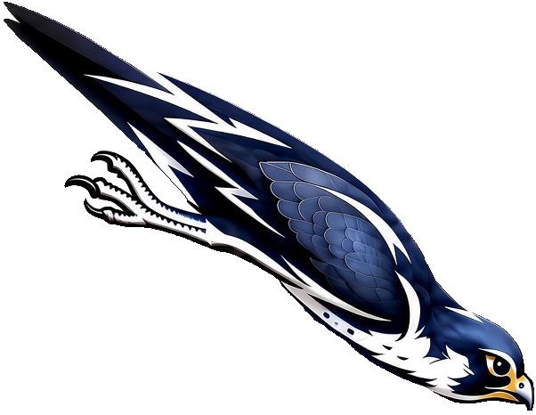
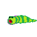
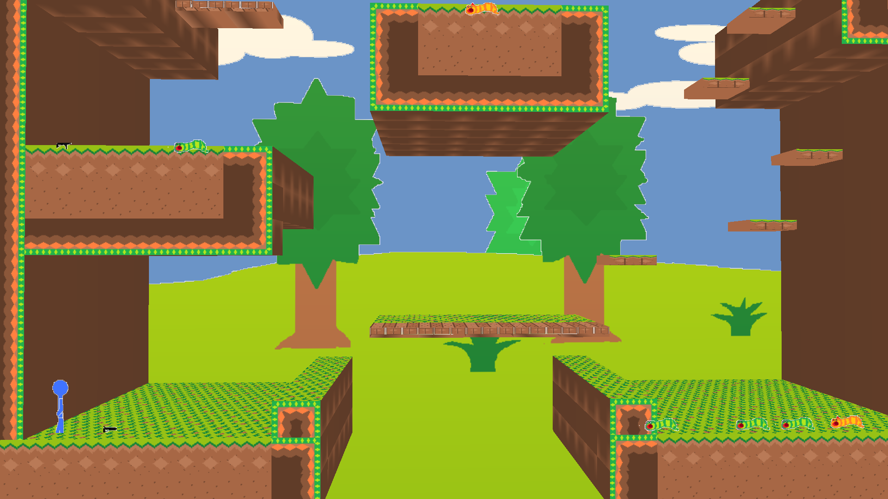
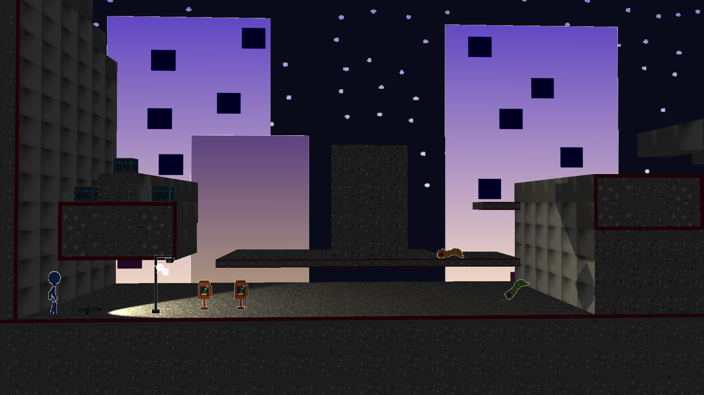
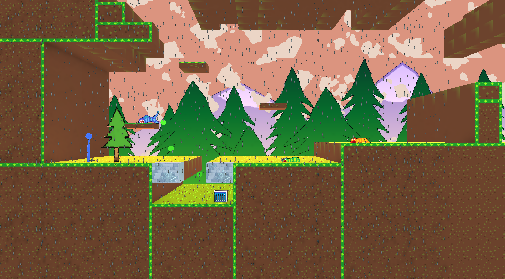
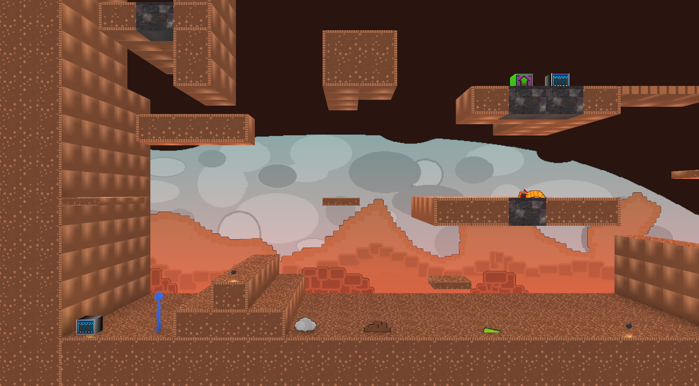

Media
Press kit
Use these assets for articles, videos, and streams. Right-click any image to save. For quotes, interviews, or a higher-res pack, email press@sharpwingstudio.com.
Fact sheet
Centroid
- Studio SharpWing Studio
- Title Centroid
- Genre Side-scrolling platformer-shooter
- Pitch A 2013 Xbox Live Indie Game, rebuilt. Find a gun. Chunk some grubs.
- Campaign 30 levels · woods, city night, mountains, crater
- Play Solo or local split-screen, 1–4 players
- Platforms Windows + Linux
- Release TBA
- Developer Jack McGowen
- Music Keenan Franklin · Ozzed
- Website sharpwingstudio.com
- Press press@sharpwingstudio.com
Space Pace
- Studio SharpWing Studio
- Title Space Pace
- Genre Chase-view cockpit space shooter
- Pitch Three ownships, ten sectors, and a rogue AI who sells to the bad guys.
- Ownships Sharpwing · Needle · Bulwark
- Training Seven-lesson lane
- Campaign 10 sectors · ends at the Rigma mothership
- Play Solo · pick a slot, pilot name, and ship
- Platforms Windows + Linux
- Release TBA
- Developer Jack McGowen
- Engine Peregrine
- Music Original, synthesized in-house by SharpWing Studio
- Website Space Pace
- Press press@sharpwingstudio.com
Logos



Screenshots




One tease per biome. Development captures — please caption as work in progress unless we send a final set.
Space Pace · ownships


Three ownships. Development captures — please caption as work in progress unless we send a final set.